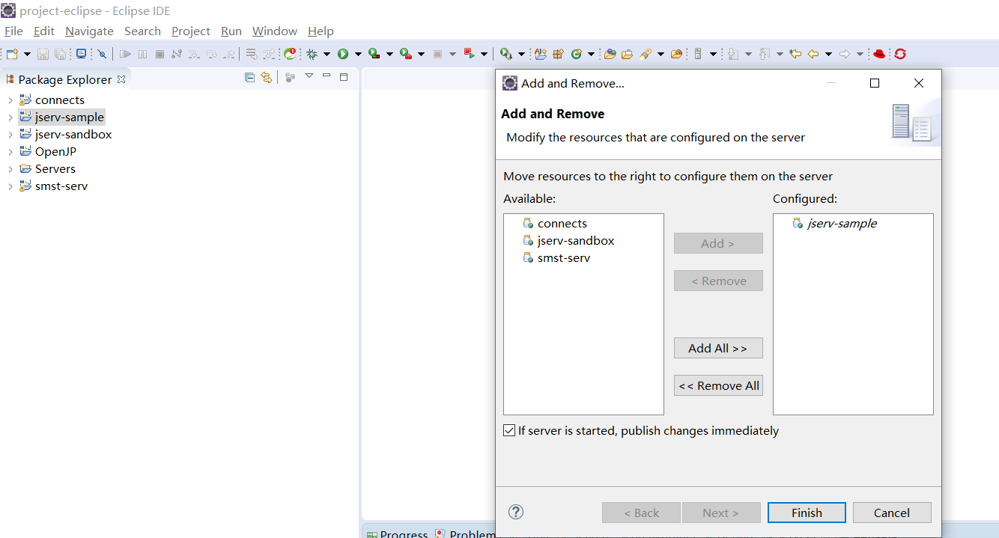
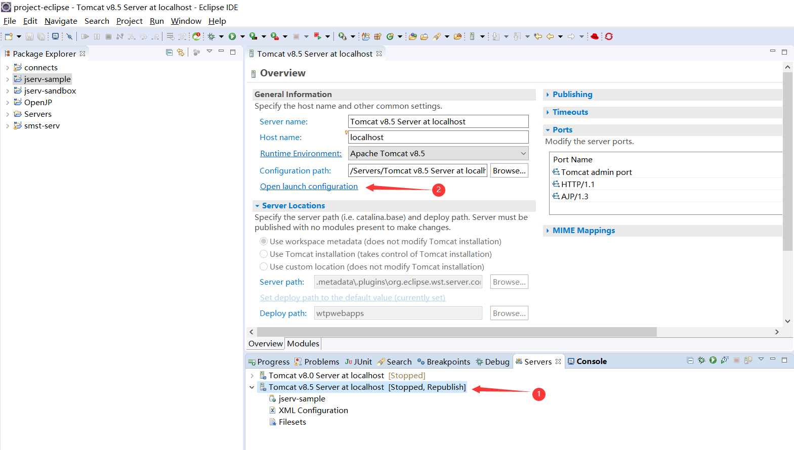
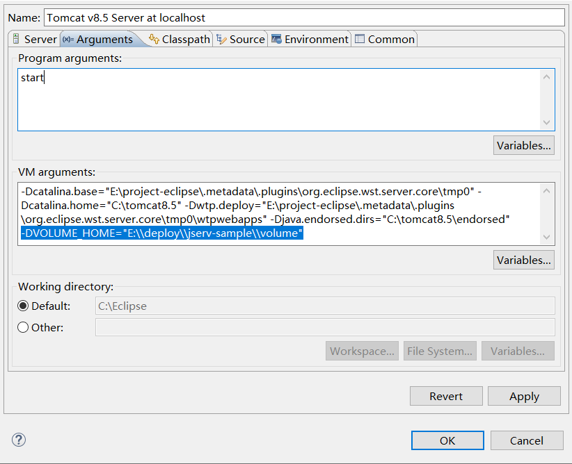
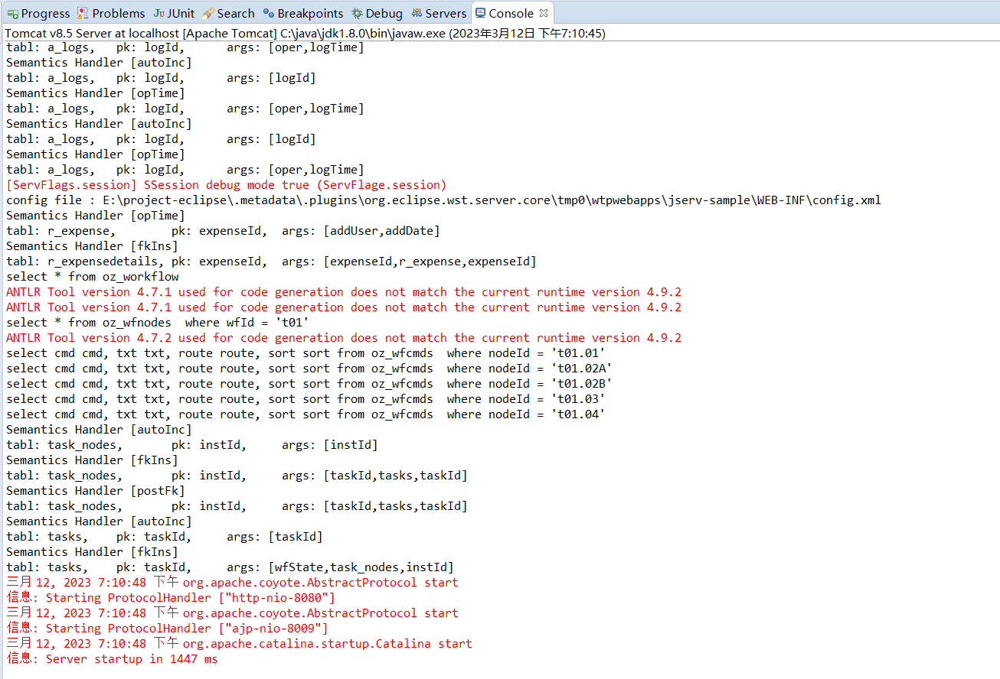

2. 后端部署
2.1. 下载
2.2. 导入
先解压 jserv-sample.zip 文件，然后导入eclipse：
注意
如果项目导入后报错，请手动更新maven，右键项目jserv-sample -> Maven -> Update Project
2.3. 部署
将 jserv-sample 项目部署到 Tomcat（版本建议8.0及以上）：
双击Servers视图的Tomcat，在Tomcat配置界面，点击Open launch configuration，配置环境变量：
在 Arguments 标签栏的 VM arguments 中添加jserv-sample项目里volume目录的绝对路径，举例：
注意
注意参数格式为 -DVOLUME_HOME=”你项目的绝对路径\\volume”
2.4. 启动
右键 Tomcat 启动，启动成功则提示如下（默认端口8080）：
